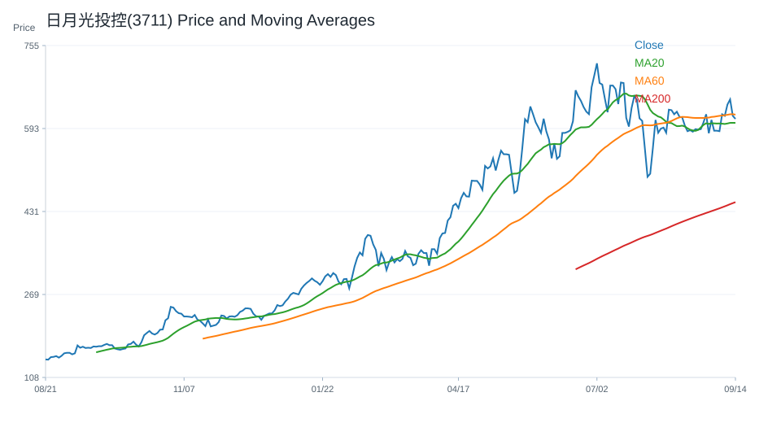
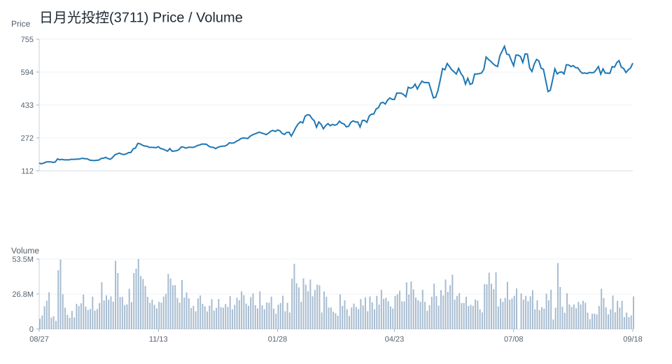
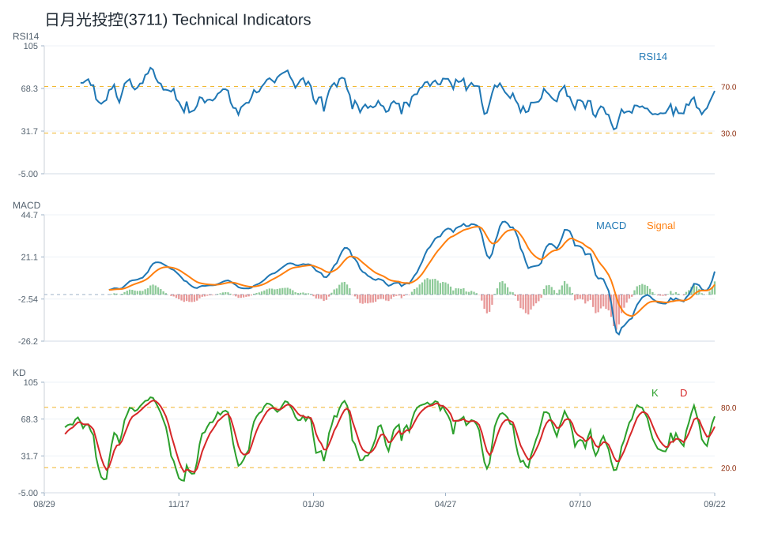
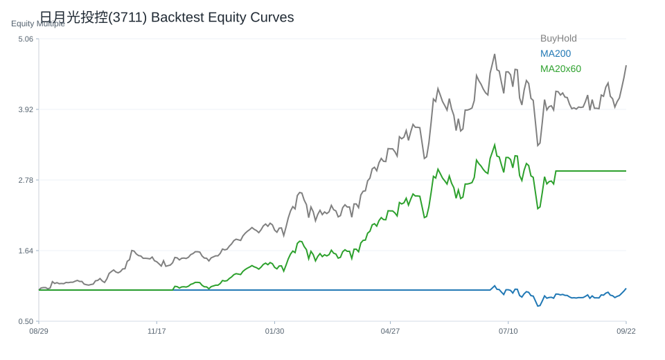

20 日
20.56%60 日
65.65%觀察等級
積極觀察市場資料
2026-07-07- 成交量24,611,529.00
- 20 日均線632.15
- 60 日均線560.93
- 200 日均線349.76
- 距 52 週高點-10.45%
- 距 52 週低點360.07%
技術指標
Python 計算- RSI1454.32
- MACD hist0.12
- KD K/D57.10 / 66.56
- ADX28.17
- 布林上緣734.00
- 布林下緣530.30
量價與事件
規則式分析- 量價型態量能中性
- 量價分數1
- 20 日量比0.96
- OBV 20 日變化-9.42%
- 事件偏向事件中性
- 事件分數0
研究訊號與觀察等級
不是買賣建議積極觀察；研究訊號 強烈偏多，分數 7。
多項量化與事件條件同時偏正向，適合列為優先研究名單。
- 20 日漲幅偏強
- 60 日趨勢偏強
- 站上 20 日均線
- 站上 200 日均線
- RSI 位於中性偏強區
- MACD histogram 為正
- KD 偏弱
- ADX 顯示趨勢強度較高
回測摘要
歷史資料研究| 策略 | CAGR | Sharpe | 最大回撤 | 勝率 | 交易次數 |
|---|---|---|---|---|---|
| 價格高於 200 日均線 | 47.76% | 1.27 | -44.97% | 51.91% | 14 |
| 20/60 日均線交叉 | 52.72% | 1.35 | -32.82% | 52.21% | 9 |
| 買進持有 | 70.95% | 1.50 | -40.57% | 53.26% | 1 |
圖表
價格 / 量價 / 技術 / 回測日月光投控(3711) 價格均線

日月光投控(3711) 量價關係

日月光投控(3711) 技術指標

日月光投控(3711) 回測
